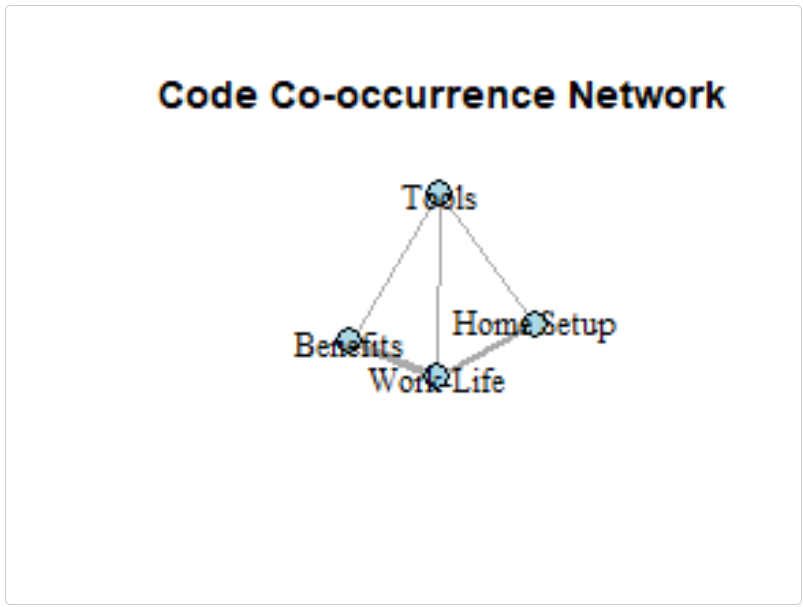
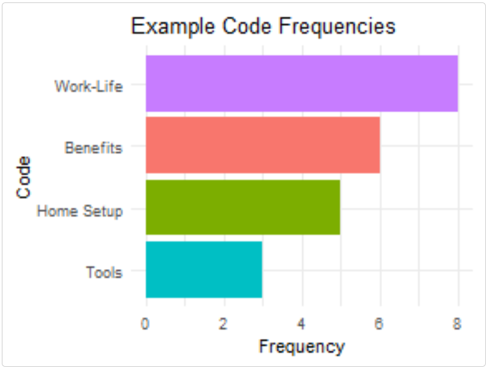

Technical Integration - Using textAnnotatoR with Other R Tools
Chao Liu
2025-05-16
Source:vignettes/technical_integration.Rmd
technical_integration.RmdIntroduction
While textAnnotatoR provides a comprehensive GUI for annotation, it can be integrated seamlessly with the broader R ecosystem. This vignette demonstrates how you can integrate textAnnotatoR’s outputs with other popular R packages for text analysis, visualization, and reporting.
IMPORTANT NOTE: The example functions shown in this vignette are not part of the textAnnotatoR package. They are provided as examples that users can adapt and implement in their own workflows to extend textAnnotatoR’s capabilities. These sample functions demonstrate how to work with textAnnotatoR’s data structures to integrate with other R tools.
Understanding Data Structures
Before integrating with other tools, let’s explore the structure of textAnnotatoR’s data:
Project Files
textAnnotatoR project files (.rds) contain the following components:
# EXAMPLE USER FUNCTION - NOT PART OF THE PACKAGE
# This function demonstrates how a user might initialize a directory
# for working with textAnnotatoR project files programmatically
initialize_project_directory <- function() {
# Get user documents directory as a safer default
user_docs <- file.path(path.expand("~"), "Documents")
# Create textAnnotatoR directory if it doesn't exist
text_annotator_dir <- file.path(user_docs, "textAnnotatoR")
if (!dir.exists(text_annotator_dir)) {
dir.create(text_annotator_dir, recursive = TRUE)
}
# Create projects subdirectory
projects_dir <- file.path(text_annotator_dir, "projects")
if (!dir.exists(projects_dir)) {
dir.create(projects_dir, recursive = TRUE)
}
return(projects_dir)
}
# Initialize the directory
projects_dir <- initialize_project_directory()
# Create a sample project for demonstration
project <- list(
text = "Sample interview text content for demonstration purposes. This text contains information about remote work challenges and benefits.",
annotations = data.frame(
start = c(1, 25, 50, 80),
end = c(10, 35, 60, 90),
text = c("Sample", "interview", "demonstration", "remote work"),
code = c("Sample", "Interview", "Demo", "Remote"),
memo = c("Example memo", "Interview note", "Demo note", "Remote note"),
stringsAsFactors = FALSE
),
codes = c("Sample", "Interview", "Demo", "Remote"),
code_tree = data.tree::Node$new("Root"),
code_colors = c("Sample" = "#FF0000", "Interview" = "#00FF00",
"Demo" = "#0000FF", "Remote" = "#FFCC00"),
memos = list(),
code_descriptions = list()
)
# Structure of a project
str(project, max.level = 1)Annotation Data Frame
The core annotation data is stored in a standard R data frame:
# View annotation structure
head(project$annotations)
#> start end text code memo
#> 1 1 10 Sample Sample Example memo
#> 2 25 35 interview Interview Interview note
#> 3 50 60 demonstration Demo Demo note
#> 4 80 90 remote work Remote Remote noteThis structure makes it readily compatible with standard R data manipulation tools.
Integrating with Text Analysis Packages
Using textAnnotatoR with quanteda
The quanteda package is a powerful framework for text analysis. Here’s how you can combine textAnnotatoR annotations with quanteda:
library(quanteda)
library(quanteda.textstats)
library(dplyr)
# Extract annotations by code
sample_texts <- project$annotations %>%
filter(code == "Sample") %>%
pull(text)
# Create a corpus from these text segments
sample_corpus <- corpus(sample_texts)
# Analyze with quanteda
sample_dfm <- dfm(tokens(sample_corpus))
textstat_frequency(sample_dfm, n = 5) # Top 5 words
#> feature frequency rank docfreq group
#> 1 sample 1 1 1 allIntegration with tidytext
The tidytext package works beautifully with textAnnotatoR outputs:
library(tidytext)
library(ggplot2)
# Example of how you can convert annotations to tidy format
tidy_annotations <- project$annotations %>%
unnest_tokens(word, text) %>%
anti_join(stop_words)
# Word frequency by code
word_frequencies <- tidy_annotations %>%
count(code, word, sort = TRUE) %>%
group_by(code) %>%
top_n(5, n)
# Simple visualization
ggplot(word_frequencies, aes(reorder(word, n), n, fill = code)) +
geom_col(show.legend = FALSE) +
facet_wrap(~code, scales = "free") +
coord_flip() +
labs(title = "Top Words by Code",
x = NULL,
y = "Count")Enhanced Visualization
Network Visualization with igraph
The following example demonstrates how you can create network visualizations from co-occurrence patterns:
library(igraph)
library(ggplot2)
# EXAMPLE USER CODE - NOT PART OF THE PACKAGE
# Create a simple matrix of code co-occurrences
codes <- c("Home Setup", "Work-Life", "Tools", "Benefits")
co_matrix <- matrix(c(
0, 2, 1, 0, # Home Setup
2, 0, 1, 3, # Work-Life
1, 1, 0, 1, # Tools
0, 3, 1, 0 # Benefits
), nrow = 4, byrow = TRUE)
rownames(co_matrix) <- colnames(co_matrix) <- codes
# Create a graph
g <- graph_from_adjacency_matrix(
co_matrix,
mode = "undirected",
weighted = TRUE,
diag = FALSE
)
# Basic plot
plot(g,
vertex.color = "lightblue",
vertex.size = 30,
vertex.label.color = "black",
edge.width = E(g)$weight,
main = "Code Co-occurrence Network")
Simple Visualizations with ggplot2
Create static visualizations of your code frequencies:
# EXAMPLE USER CODE - NOT PART OF THE PACKAGE
# Create a base ggplot with code frequencies
code_freq <- data.frame(
code = codes,
frequency = c(5, 8, 3, 6)
)
# Create a simple bar chart
ggplot(code_freq, aes(reorder(code, frequency), frequency, fill = code)) +
geom_col() +
coord_flip() +
theme_minimal() +
labs(title = "Example Code Frequencies", x = "Code", y = "Frequency") +
theme(legend.position = "none")
Batch Processing and Automation
Processing Multiple Documents
For projects with multiple documents, you can create your own functions to automate the workflow:
# EXAMPLE USER FUNCTION - NOT PART OF THE PACKAGE
# This function demonstrates how you might process a single document
process_document <- function(file_path, coding_scheme) {
# Import text
text <- readLines(file_path, warn = FALSE)
text <- paste(text, collapse = "\n")
# Create a new project structure
project <- list(
text = text,
annotations = data.frame(
start = integer(),
end = integer(),
text = character(),
code = character(),
memo = character(),
stringsAsFactors = FALSE
),
codes = coding_scheme$codes,
code_tree = coding_scheme$code_tree,
code_colors = coding_scheme$code_colors,
memos = list(),
code_descriptions = coding_scheme$code_descriptions
)
# Save as a textAnnotatoR project
project_name <- paste0(basename(tools::file_path_sans_ext(file_path)), ".rds")
saveRDS(project, file.path(projects_dir, project_name))
cat("Processed:", file_path, "\n")
return(project_name)
}
# Example of how you might process a folder of documents
# files <- list.files("interview_transcripts", pattern = "*.txt", full.names = TRUE)
# processed_projects <- sapply(files, process_document, coding_scheme = master_scheme)Export to Other Formats
You can write functions to convert textAnnotatoR annotations to formats compatible with other QDA software:
# EXAMPLE USER FUNCTION - NOT PART OF THE PACKAGE
# Basic export to CSV
export_to_csv <- function(project, output_file) {
write.csv(project$annotations, output_file, row.names = FALSE)
return(output_file)
}
# Example of how you might export annotations
# export_to_csv(project, "project_annotations.csv")Integration with Reporting Tools
Creating Reports with R Markdown
You can generate comprehensive reports from your textAnnotatoR analyses:
library(rmarkdown)
# EXAMPLE USER FUNCTION - NOT PART OF THE PACKAGE
# This function demonstrates how you might generate a simple report
generate_analysis_report <- function(project, output_file = "analysis_report.html") {
# Create a temporary Rmd file
temp_rmd <- tempfile(fileext = ".Rmd")
# Write R Markdown content
writeLines(
c("---",
"title: 'Qualitative Analysis Report'",
"output: html_document",
"---",
"",
"```{r setup, include=FALSE}",
"knitr::opts_chunk$set(echo = FALSE)",
"```",
"",
"# Analysis Overview",
"",
"This report presents findings from qualitative analysis using textAnnotatoR.",
"",
"## Document Statistics",
"",
"```{r}",
"stats <- data.frame(",
" Metric = c('Total Words', 'Total Annotations', 'Unique Codes'),",
paste0(" Value = c(length(strsplit(project$text, '\\\\W+')[[1]]), nrow(project$annotations), length(project$codes))"),
")",
"knitr::kable(stats)",
"```",
"",
"## Annotations Table",
"",
"```{r}",
"knitr::kable(project$annotations)",
"```"
),
temp_rmd
)
# Render the report
rmarkdown::render(temp_rmd, output_file = output_file)
return(output_file)
}Performance Tips
Working with Large Documents
For very large documents, consider creating these optimization strategies:
# EXAMPLE USER FUNCTIONS - NOT PART OF THE PACKAGE
# These functions demonstrate techniques you could implement
# Split large documents into manageable chunks
split_large_document <- function(file_path, chunk_size = 5000) {
text <- readLines(file_path, warn = FALSE)
text <- paste(text, collapse = "\n")
# Split into chunks
chunks <- list()
for (i in seq(1, nchar(text), by = chunk_size)) {
end_pos <- min(i + chunk_size - 1, nchar(text))
chunks[[length(chunks) + 1]] <- substr(text, i, end_pos)
}
# Save chunks
chunk_files <- character(length(chunks))
for (i in seq_along(chunks)) {
filename <- paste0(tools::file_path_sans_ext(basename(file_path)),
"_chunk", i, ".txt")
writeLines(chunks[[i]], filename)
chunk_files[i] <- filename
}
return(chunk_files)
}
# Optimize annotations for performance
optimize_annotations <- function(project) {
# Remove duplicate annotations
project$annotations <- unique(project$annotations)
# Sort by position
project$annotations <- project$annotations[order(project$annotations$start), ]
return(project)
}Batch Processing Tips
When working with multiple files or team members, you could implement functions like this:
# EXAMPLE USER FUNCTION - NOT PART OF THE PACKAGE
# This function demonstrates how you might merge annotations from multiple coders
merge_annotations <- function(annotation_files, output_file = "merged_annotations.csv") {
# Read all annotation files
all_annotations <- lapply(annotation_files, read.csv, stringsAsFactors = FALSE)
# Add coder column to each set
for (i in seq_along(all_annotations)) {
all_annotations[[i]]$coder <- paste0("Coder", i)
}
# Combine all annotations
merged <- do.call(rbind, all_annotations)
# Write to CSV
write.csv(merged, output_file, row.names = FALSE)
return(output_file)
}
# Example of how you might use this:
# merge_annotations(c("coder1_annotations.csv", "coder2_annotations.csv"))Conclusion
This vignette demonstrates how you can leverage textAnnotatoR’s data structures to integrate with the broader R ecosystem. By combining the intuitive annotation interface with powerful R packages for analysis and visualization, you gain more control over your qualitative analysis workflow.
Remember, all the example functions provided in this vignette are not part of the textAnnotatoR package but rather examples of how you can extend the package’s functionality. You are encouraged to adapt and modify these functions to fit your specific requirements.
The examples provided here use simple data to demonstrate the concepts while keeping the package size reasonable. In practice, you would use your actual project data exported from textAnnotatoR.
Note: Some code examples use eval=FALSE to prevent
large outputs during package building while still showing the code for
demonstration purposes.